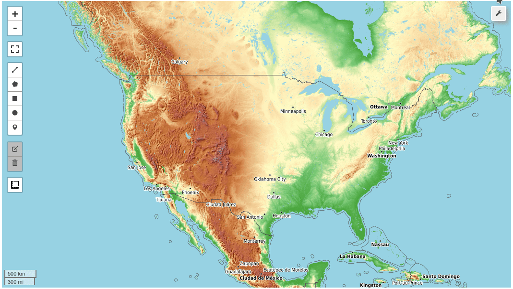

Welcome to leafmap¶


A Python package for geospatial analysis and interactive mapping in a Jupyter environment.
- GitHub repo: https://github.com/giswqs/leafmap
- Documentation: https://leafmap.org
- PyPI: https://pypi.org/project/leafmap
- Conda-forge: https://anaconda.org/conda-forge/leafmap
- Leafmap tutorials on YouTube: https://youtube.com/@giswqs
- Free software: MIT license
Introduction¶
Leafmap is a Python package for interactive mapping and geospatial analysis with minimal coding in a Jupyter environment. It is a spin-off project of the geemap Python package, which was designed specifically to work with Google Earth Engine (GEE). However, not everyone in the geospatial community has access to the GEE cloud computing platform. Leafmap is designed to fill this gap for non-GEE users. It is a free and open-source Python package that enables users to analyze and visualize geospatial data with minimal coding in a Jupyter environment, such as Google Colab, Jupyter Notebook, and JupyterLab. Leafmap is built upon several open-source packages, such as folium and ipyleaflet (for creating interactive maps), WhiteboxTools and whiteboxgui (for analyzing geospatial data), and ipywidgets (for designing interactive graphical user interfaces [GUIs]). Leafmap has a toolset with various interactive tools that allow users to load vector and raster data onto the map without coding. In addition, users can use the powerful analytical backend (i.e., WhiteboxTools) to perform geospatial analysis directly within the leafmap user interface without writing a single line of code. The WhiteboxTools library currently contains 500+ tools for advanced geospatial analysis, such as GIS Analysis, Geomorphometric Analysis, Hydrological Analysis, LiDAR Data Analysis, Mathematical and Statistical Analysis, and Stream Network Analysis.
Statement of Need¶
There is a plethora of Python packages for geospatial analysis, such as geopandas for vector data analysis and xarray for raster data analysis. As listed at pyviz.org, there are also many options for plotting data on a map in Python, ranging from libraries focused specifically on maps like ipyleaflet and kepler.gl to general-purpose plotting tools that also support geospatial data types, such as hvPlot, GeoViews, and plotly. These tools provide a lot of power, but displaying geospatial data from various file formats on an interactive map and applying basic analyses can take many lines of code and can be a challenging task for novice users with limited coding skills. Many of the tools also only work "one way", i.e. they can generate maps for display in a browser front end but don't support invoking Python code in response to clicking or selecting items on the map, limiting their utility for exploring map data.
Leafmap is built on the bidirectional communication between the front end (your browser) and the backend (Python) provided by ipleaflet (and similarly by hvPlot and GeoViews) to provide many convenient functions for loading and visualizing geospatial datasets with only one line of code. Users can also use the interactive GUI to load geospatial datasets without coding. Leafmap is intended for anyone who would like to analyze and visualize geospatial data interactively in a Jupyter environment. It is particularly suited for novice users with limited programming skills. Advanced programmers can also find leafmap a useful tool for analyzing geospatial data and building interactive web apps.
Launch the interactive notebook tutorial for the leafmap Python package with JupyterLite, Google Colab, Binder, or Amazon Sagemaker Studio Lab now:


Check out this excellent article on Medium - Leafmap a new Python Package for Geospatial data science
Key Features¶
Below is a partial list of features available for the leafmap package. Please check the examples page for notebook examples, GIF animations, and video tutorials.
- Create an interactive map with only one-line of code.
- Select from a variety of basemaps interactively without coding.
- Add XYZ, WMS, and vector tile services to the map.
- Convert CSV to points and display points as a marker cluster.
- Add local vector data (e.g., shapefile, GeoJSON, KML) to the map without coding.
- Add local raster data (e.g., GeoTIFF) to the map without coding.
- Add Cloud Optimized GeoTIFF (COG) and SpatialTemporal Asset Catalog (STAC) to the map.
- Add OpenStreetMap data to the map with a single line of code.
- Add a GeoPandas GeoDataFrame to the map with a single line of code.
- Add a point layer with popup attributes to the map.
- Add data from a PostGIS database to the map.
- Add custom legends and colorbars to the map.
- Perform geospatial analysis using WhiteboxTools and whiteboxgui.
- Create split-panel map and linked maps.
- Publish interactive maps with a single line of code.
- Download and display OpenStreetMap data with a single line of code.
Citations¶
If you find leafmap useful in your research, please consider citing the following paper to support my work. Thank you for your support.
- Wu, Q. (2021). Leafmap: A Python package for interactive mapping and geospatial analysis with minimal coding in a Jupyter environment. Journal of Open Source Software, 6(63), 3414. https://doi.org/10.21105/joss.03414
Demo¶

YouTube Channel¶
I have created a YouTube Channel for sharing geospatial tutorials. You can subscribe to my channel for regular updates. If there is any specific tutorial you would like to see, please submit a feature request here.

Created: 2021-03-10